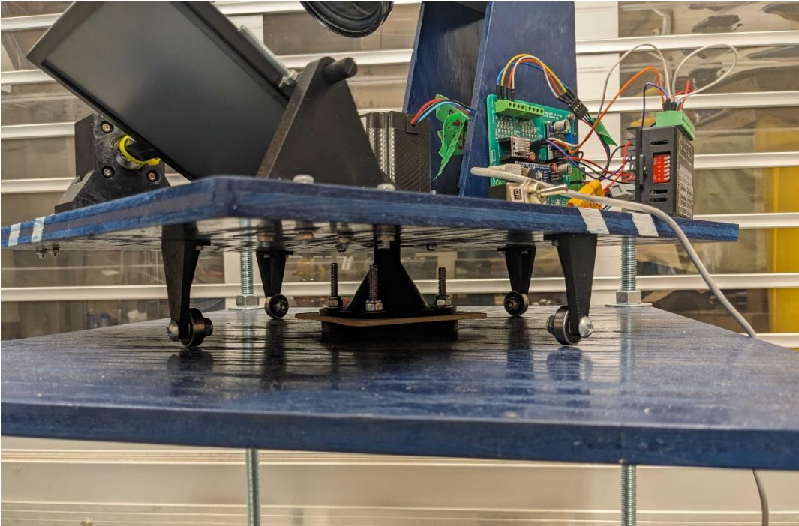

Project
Sunflower Tracking System
Real-time rocket tracking with YOLOv8 object detection and dual-axis PID control.
The Problem
Amateur rockets move fast. Manually tracking one through a camera viewfinder is basically impossible once it clears the rail. We needed footage good enough for post-flight analysis, not just a blurry dot disappearing into the sky.
What I built
Sunflower is a camera tracker that locks onto a rocket and follows it autonomously. It runs YOLOv8 for detection, feeds bounding box positions into dual-axis PID loops, and drives a custom stepper-motor gimbal to keep the rocket centered in frame. Won 2nd place at Launch Canada.
Highlights
- Implemented YOLOv8 detection and tracking on live video feeds.
- Tuned dual-axis PID loops for smooth and responsive control.
- Integrated mechanical gimbal assemblies with software control.
Media
